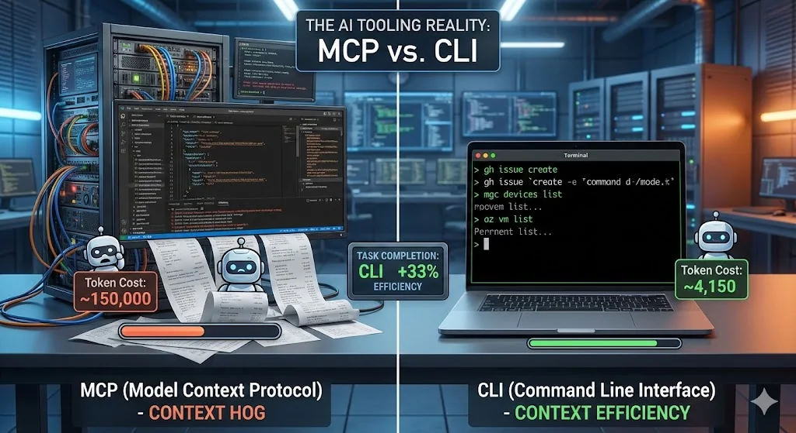

CLI Tools vs MCP: Better AI Agents With Less Context
Letâs be honest: MCP (Model Context Protocol) was supposed to be the universal connector between AI models and the real world. A clean, structured protocol that lets your AI agent talk to any tool through a standardized interface. Sounds great in theory. In practice? Iâm increasingly reaching for good old CLI tools instead â and Iâm not alone.
After months of building AI agent solutions and working with both approaches in real-world enterprise scenarios, hereâs my take: CLI tools are the better choice in many cases, and the reason is surprisingly simple â context efficiency. Microsoftâs own guidance on CLI tools like the Azure CLI reflects how mature this tooling has become.

The Problem with MCP Nobody Talks About
MCP works. Iâm not saying it doesnât. But hereâs the thing that hit me after integrating multiple MCP servers into agent workflows: MCP is a context hog.
A typical MCP server doesnât just expose the tools you need. It dumps an entire schema into your agentâs context window â tool definitions, parameter descriptions, authentication flows, state management, the whole package.
Let me show you what I mean. Hereâs what happens when you connect a popular GitHub MCP server:
{ "tools": [ { "name": "create_issue", "description": "Create a new issue in a GitHub repository", "inputSchema": { "type": "object", "properties": { "owner": { "type": "string", "description": "Repository owner" }, "repo": { "type": "string", "description": "Repository name" }, "title": { "type": "string", "description": "Issue title" }, "body": { "type": "string", "description": "Issue body content" }, "assignees": { "type": "array", "items": { "type": "string" } }, "labels": { "type": "array", "items": { "type": "string" } }, "milestone": { "type": "integer" } }, "required": ["owner", "repo", "title"] } } // ... repeat this for 92 more tools ]}Thatâs one tool definition. The full GitHub MCP server ships with 93 tools. Total context cost? Around 55,000 tokens â before youâve even asked a single question. Thatâs roughly half of GPT-4oâs context window or a significant chunk of Claudeâs budget gone just for the plumbing.
Now stack multiple MCP servers. A typical enterprise agent might need GitHub, a database connector, Microsoft Graph, and maybe Jira. Youâre easily looking at 150,000+ tokens of tool definitions alone.
Compare that to CLI:
gh issue create --repo my-org/my-repo --title "Bug in auth flow" --body "Steps to reproduce..."The model already knows gh. Zero schema tokens consumed. The entire interaction â command plus output â might cost you 200 tokens.
The Token Math That Changed My Mind
I ran a side-by-side comparison on a real task: âList all non-compliant Intune devices and export their details to a CSV.â
MCP approach (Microsoft Graph MCP Server):
| Phase | Token Cost |
|---|---|
| Tool schema injection | ~28,000 tokens |
| Agent reasoning + tool selection | ~3,200 tokens |
| MCP call: list devices with filter | ~1,800 tokens |
| MCP response parsing | ~4,500 tokens |
| MCP call: get device details (per device) | ~2,100 tokens à N |
| Total for 50 devices | ~145,000 tokens |
CLI approach:
| Phase | Token Cost |
|---|---|
| Tool schema injection | 0 tokens |
| Agent reasoning + command composition | ~800 tokens |
| Shell command execution | ~150 tokens |
| Output parsing | ~3,200 tokens |
| Total for 50 devices | ~4,150 tokens |
Thatâs not a marginal difference. Thatâs a 35x reduction in token usage. And tokens arenât just a cost metric â theyâre directly tied to how much reasoning capacity your agent has left for the actual problem.
Real-World Example: Intune Compliance Automation
Let me walk you through both approaches for a task I actually built for a customer.
The goal: Build an agent that checks device compliance across an Intune tenant, identifies policy violations, cross-references with Entra ID group memberships, and generates a remediation report.
The MCP Approach
I set up three MCP servers: Microsoft Graph (for Intune and Entra ID), a custom compliance rules engine, and a reporting tool.
Agent Context Window:âââ System prompt: ~2,000 tokensâââ Graph MCP schema: ~28,000 tokensâââ Compliance MCP schema: ~8,500 tokensâââ Reporting MCP schema: ~5,200 tokensâââ Conversation history: ~4,000 tokensâââ Available for reasoning: ~82,300 tokens (of 128K)The agent worked, but it was noticeably slower. Multi-step reasoning broke down after 3-4 tool calls because the accumulated context from MCP responses pushed the agent into the tail end of its context window where attention quality drops. I had to split the workflow into multiple agent sessions to get reliable results.
Same task. I gave the agent a shell with mgc (Microsoft Graph CLI), az CLI, and three focused PowerShell scripts.
# The agent composed this pipeline autonomously:mgc devices list --filter "complianceState eq 'noncompliant'" ` --select "id,deviceName,complianceState,userPrincipalName" --output json | ConvertFrom-Json | ForEach-Object { $device = $_ $groups = mgc users list-member-of --user-id $_.userPrincipalName ` --output json | ConvertFrom-Json [PSCustomObject]@{ DeviceName = $device.deviceName User = $device.userPrincipalName Compliance = $device.complianceState Groups = ($groups.displayName -join "; ") } } | Export-Csv -Path "compliance-report.csv" -NoTypeInformationAgent Context Window:âââ System prompt: ~2,000 tokensâââ Tool schemas: 0 tokensâââ Conversation history: ~1,500 tokensâââ Command output: ~3,200 tokensâââ Available for reasoning: ~121,300 tokens (of 128K)The agent had 95% of its context window available for reasoning. It composed the entire pipeline in one shot, handled edge cases proactively, and completed the task in a single session. No splitting needed.
Thereâs a deeper reason why CLI tools work so well with AI agents, and it goes beyond token efficiency.
AI models have been trained on billions of lines of terminal interactions â Stack Overflow answers, GitHub repos, documentation, tutorials. When you ask Claude or GPT to use git, docker, az, kubectl, or gh, youâre tapping into deeply learned patterns. The model doesnât need a schema to know that git log --oneline -10 shows the last 10 commits.
MCP servers, on the other hand, are custom schemas that the model sees for the first time at runtime. Even with good descriptions, the model has to reason about unfamiliar tool interfaces on the fly. Thatâs additional cognitive load that directly competes with the actual task.
Hereâs a quick comparison of how an agent interacts with both:
# CLI: The model already knows thisdocker ps --filter "status=running" --format "{{.Names}}: {{.Status}}"# MCP: The model has to interpret this schema first{ "name": "list_containers", "inputSchema": { "properties": { "status_filter": { "enum": ["running", "stopped", "all"] }, "format_fields": { "type": "array", "items": { "enum": ["name", "status", "image", "ports"] } } } }}The CLI version is self-documenting. The MCP version requires the model to map its intent to an unfamiliar abstraction layer.
One of the most powerful advantages of CLI tools is composability â and AI agents are surprisingly good at it.
# Agent-composed pipeline: Find Azure VMs with high CPU,# get their Intune compliance statusaz vm list --query "[?powerState=='VM running']" -o json | jq -r '.[].name' | xargs -I {} mgc devices list \ --filter "displayName eq '{}'" \ --select "complianceState" -o json | jq '[.[] | {name: .displayName, compliance: .complianceState}]'Try building this cross-tool workflow with MCP. Youâd need both servers loaded, the agent would have to orchestrate multiple structured calls, manage intermediate state, and deal with different response formats. With CLI, the agent just pipes text through familiar tools.
Benchmarks Back This Up
This isnât just my experience. Recent benchmarks from the community confirm the pattern. One detailed comparison ran identical browser automation tasks through both MCP and CLI interfaces. The results: CLI achieved a 28% higher task completion score with roughly the same total token count â meaning the tokens were spent more effectively on actual problem-solving rather than protocol overhead.
The Token Efficiency Score (TES) told the story: CLI scored 202 vs. MCPâs 152, a 33% efficiency advantage. And CLI completed tasks that MCP structurally couldnât handle, like memory profiling, because it had full access to selective queries and targeted output rather than dumping entire data structures.
When MCP Still Makes Sense
Iâm not saying MCP is dead. There are legitimate use cases where itâs the right choice:
Structured production environments where you need strict input validation, OAuth-based authentication flows, and audit trails. MCPâs schema enforcement prevents agents from running malformed commands.
Multi-tenant SaaS platforms where tools need fine-grained permission scoping. MCPâs capability negotiation protocol handles this elegantly.
Non-CLI tools and services that donât have a command-line interface. If youâre integrating with Figma, Notion, or a custom internal API, MCP is often the only practical option. But you can also build your own CLI for it.
Discovery-heavy scenarios where agents need to dynamically find available tools. MCPâs tools/list endpoint gives agents a structured way to discover capabilities. CLI requires the agent to already know what tools exist.
The sweet spot? Use CLI tools as your default, fall back to MCP when you need its specific guarantees.
Practical Guidelines for Building CLI-First Agents
If you want to adopt this approach, here are the patterns that work well:
- Provide a focused tool manifest instead of MCP schemas. Instead of loading full MCP tool definitions, give your agent a lightweight markdown file:
## Available Tools- `mgc`: Microsoft Graph CLI. Use for Intune, Entra ID, Teams, SharePoint queries.- `az`: Azure CLI. Use for Azure resource management, VMs, networking.- `gh`: GitHub CLI. Use for repos, issues, PRs, actions.- Custom scripts in /tools/: compliance-check.ps1, export-report.ps1Thatâs ~100 tokens instead of 50,000+.
- Build thin wrapper scripts for complex multi-step operations.
# /tools/get-noncompliant-devices.ps1param( [string]$OutputFormat = "json", [switch]$IncludeGroupMembership)$devices = mgc devices list ` --filter "complianceState eq 'noncompliant'" ` --select "id,deviceName,userPrincipalName,complianceState,lastSyncDateTime" ` --output $OutputFormatif ($IncludeGroupMembership) { $devices | ConvertFrom-Json | ForEach-Object { $groups = mgc users list-member-of --user-id $_.userPrincipalName --output json $_ | Add-Member -NotePropertyName "groups" -NotePropertyValue ($groups | ConvertFrom-Json).displayName $_ } | ConvertTo-Json -Depth 5} else { $devices}The agent calls one script instead of reasoning through five MCP tool calls.
- Use structured output flags. Most modern CLIs support
--output jsonor--format json. This gives agents clean, parseable data without the overhead of an MCP response wrapper.
# Structured output that agents parse effortlesslyaz vm list --output json --query "[].{name:name, state:powerState, os:storageProfile.osDisk.osType}"mgc devices list --output json --select "deviceName,complianceState"kubectl get pods -o json | jq '.items[] | {name: .metadata.name, status: .status.phase}'- Leverage
--helpas dynamic documentation. If the agent isnât sure about a command, it can callmgc devices list --helpfor just-in-time documentation. This is more token-efficient than pre-loading the entire schema â the agent only pays the token cost when it actually needs the information.
Start with CLI tools. Before reaching for MCP, ask yourself: does a CLI tool already exist for this? If yes, use it. Your agent will perform better with the extra context headroom.
Measure your context budget. Track how many tokens your tool integrations consume. You might be shocked at how much overhead MCP adds â and how directly that impacts agent reasoning quality.
Design for composability. Build small, focused CLI tools that do one thing well. Let the AI agent compose them. This is the Unix philosophy â and it turns out, AI agents love it.
Reserve MCP for what itâs good at. Production security, multi-tenant access control, tool discovery in large organizations. Donât use it just because itâs the new shiny thing.
The future of AI agent tooling isnât about the most sophisticated protocol. Itâs about the leanest path between the model and the action. And right now, that path runs through the terminal â powered by CLI tools.
There is another layer to this decision: reusable instructions for the agent. My Agent Skills vs MCP comparison explains where those fit, and Agent Skills Explained walks through building a first skill.